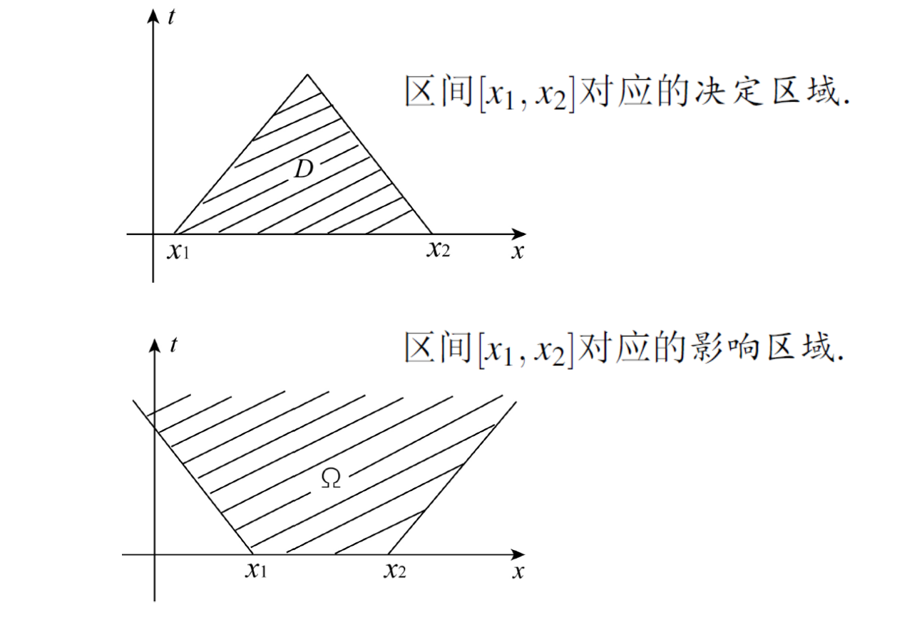
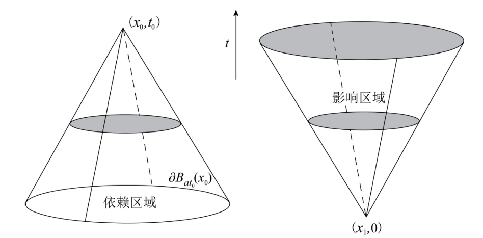

第四章 波方程初值问题
一维波方程
无界双曲型方程的解法
对于方程形如 a11uxx+2a12uxy+a22uyy=0, Δ>0, 采用特征线法求解:
- 写出特征方程: a11(dxdy)2−2a12dxdy+a22=0.
- 求解特征方程, 得到两个特征线: y=k1x+c1, y=k2x+c2. 其中 k1,k2 为特征方程的两个根, c1,c2 为两个常数.
- 两个常数对应两个线性变换: ξ=y−k1x, η=y−k2x.
- 方程可化为双曲第一标准型: uξη=0.
- 求解该方程, 可以得到 u=F(ξ)+G(η) (通解). 带入 ξ,η 及方程对应的初值条件, 可以得到 F(x),G(x), 即对应的特解.
D'Alembert(达朗贝尔)公式
对于无界波方程形如:
{utt=a2uxx,x∈Ru(x,0)=φ(x), ut(x,0)=ψ(x)
带入上述特征线法求解, 即得D'Alembert公式:
u(x,t)=21[φ(x+at)+φ(x−at)]+2a1∫x−atx+atψ(τ)dτ
行波解
对于含有非齐次项 f(x,t) 的无界波方程, 通过齐次化原理与D'Alembert公式可得Kirchhoff(基尔霍夫)公式:
u(x,t)=21[φ(x+at)+φ(x−at)]+2a1∫x−atx+atψ(τ)dτ+2a1∫0t∫x−a(t−s)x+a(t−s)f(y,s)dyds
- 其中, 第一项与第三项可分别看作中间一项的导数与积分.
- 可以写作 u(x,t)=f(x−at)+g(x+at), f,g 分别称为左行波, 右行波.
- 第三项的物理意义: 初速度的区间平均与t相乘, 即 ∫vˉ0dt.
- [x−at,x+at] 称为 (x,t) 上的依赖区间.
- 可以作出 [x1,x2] 的决定区域与影响区域, 其中直线的斜率为 k=at0t0=a1.

- 由行波法求解半无界问题:
- 由行波法得到解的形式为 f(x−at)+g(x+at).
- 带入处条件, 得到 f(x),g(x) 的形式.
- 分情况讨论 x>at,0<x<at 的解.
- 0<x<at 时, 带入边界条件得到 f(−at) 与 g(at) 的关系, 带入即可.
三维波方程: 球面平均法
将Kirchhoff公式向三维延拓, 得到Poisson公式:
u(x,t)=∂t[4πa2t1∬∣y−x∣=atφ(y)dSy]+4πa2t1∬∣y−x∣=atψ(y)dSy+∫0t∬∣y−x∣=a(t−s)4πa2(t−s)1f(y,s)dSydt
- 具体计算时, 使用球坐标: ⎩⎨⎧y1=x1+atsinθcosφy2=x2+atsinθsinφy3=x3+atcosθ.
- 积分面元替换为 dSy=a2t2sinθdθdφ.
- 其中 θ∈[0,π],φ∈[0,2π].
- 三维的依赖区域与影响区域: Huygens原理.

二维波方程: 降维法
- 对于二维波方程, 可以将其视为 uzz=0 的三维方程, 带入Poisson公式求解.
- 可以使用降维法思想求解的问题: 形如
⎩⎨⎧utt=a2Δu+f1(x,t)+f2(y,t)+f3(z,t)u(x,y,z,0)=Φ1(x)+Φ2(y)+Φ3(z),ut(x,y,z,0)=Ψ1(x)+Ψ2(y)+Ψ3(z)
- 拆分为三个子问题: v(x,t),w(y,t),h(z,t).
- 对于形如 u(x,y,z,0)=yh(z) 的初条件, 可以向 z 拆分, 将 y 视作常数求解.